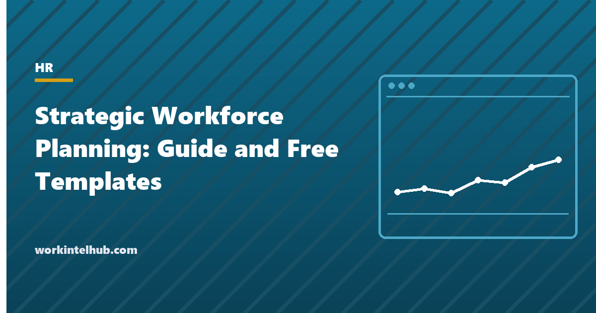

Strategic Workforce Planning: Guide and Free Templates

Strategic workforce planning asks what workforce the organisation will need in three to five years to deliver its strategy, what workforce it will have if nothing changes, and what it will take to close the difference. It differs from annual headcount planning in horizon and in what it varies: not just how many people, but which roles exist at all, which skills matter, where the work is done, and whether it is done by employees, contractors or software.
This guide sets out a six-step method that HR and finance teams can run without a consultancy, the data each step needs, the mistakes that make plans unusable, and a set of templates: a strategy-to-workforce translation sheet, a demand forecast by role family, a supply projection, a gap and action plan, a scenario comparison and a one-page plan summary for the board. The workforce planning templates hold the operational sheets this method feeds.
Download the templates
Free files: Word, Excel and PDF
Three files, free, no email required. Word to edit, Excel to track, PDF to print or share.
Templates open in Microsoft Word, Excel, Google Docs and Sheets, LibreOffice and any PDF reader. Free to use and adapt for your organisation.
The six steps
| Step | Question | Output | Data needed |
|---|---|---|---|
| 1. Translate strategy | What work will change? | Role families and skills affected | Strategic plan, operating model |
| 2. Forecast demand | How many of each role family in three years? | FTE by role family, driven by volume or revenue ratios | Business forecast, current ratios, productivity assumptions |
| 3. Project supply | How many will we have if nothing changes? | FTE after attrition, retirement and moves | HRIS data: headcount, ages, tenure, attrition by role |
| 4. Analyse gaps | Where are we short, long or mis-skilled? | Gap by role family and skill | Steps 2 and 3, skills inventory |
| 5. Plan actions | Build, buy, borrow, bot or bind? | Action plan with owners, cost and timing | Hiring lead times, development costs, contractor rates |
| 6. Review | Is it working, and has the strategy changed? | Quarterly refresh, annual rebuild | Actuals against plan |
Forecasting demand without a crystal ball
Demand is forecast through drivers: the thing the role family's workload scales with. Customer service scales with customers or tickets, engineering with product roadmap, sales with revenue targets, operations with volume. Divide current FTE by the current driver to get a ratio, apply the ratio to the three-year driver forecast, and adjust for productivity changes you expect from process or automation. The sheet does this per role family. Where a role family has no driver, it is probably overhead whose size is a policy choice, and the plan should say so.
Resist forecasting at job-title level. Role families (customer-facing, engineering, operations, corporate) are stable enough to plan with; titles change every reorganisation.
Projecting supply honestly
Supply compounds: a role family with 100 people and 18 percent attrition has about 55 of today's people in three years before any hiring. Retirements are known from ages and can be large in some trades. Internal promotions out of a family are a supply loss for it and a gain for the one above. The turnover rate entry covers the calculation, and the retention strategies guide the levers that change it, which is the "bind" action in step five.
Build, buy, borrow, bot, bind
- Build: develop existing people into the roles needed; slowest, cheapest per head, best for retention. The development plan templates are the tool.
- Buy: hire; fastest for common skills, expensive and slow for scarce ones; lead times go in the plan.
- Borrow: contractors and partners for peaks and rare skills; watch the classification rules.
- Bot: automate work so fewer people are needed; the productivity assumption in the demand sheet, which must be evidenced, not hoped.
- Bind: retain the people you have, especially in critical roles; cheaper than any of the others and usually the first thing to do.
Why strategic workforce plans fail
- Built by HR alone, without finance's forecast or the business's operating plan, so nobody owns the numbers.
- Forecast at job-title level, obsolete at the first reorganisation.
- Supply projected without attrition, so the gap is understated by a third.
- One scenario; the plan breaks the moment the business outlook changes.
- Actions without owners, costs and dates; a gap is not a plan.
- Never reviewed. Quarterly refresh of attrition and requisitions, annual rebuild; the HR metrics guide lists the measures to track.
Key takeaways
- Strategic workforce planning asks what workforce the strategy needs in three to five years, what you will have, and how to close the gap.
- Forecast demand through drivers at role-family level; project supply with compounding attrition, retirements and moves.
- Close gaps with build, buy, borrow, bot and bind, each with an owner, a cost and a date; bind first.
- Build it with finance and the business, model more than one scenario, review quarterly.
Frequently asked questions
What is strategic workforce planning?
The process of forecasting the workforce an organisation will need in three to five years to deliver its strategy, projecting the workforce it will have after attrition, retirement and moves, and planning how to close the gap through development, hiring, contracting, automation and retention.
How is it different from workforce planning or headcount planning?
Headcount planning sets next year's numbers against a budget. Workforce planning adds attrition, skills and succession over one to three years. Strategic workforce planning starts from the strategy, works at role-family level over three to five years, and questions which roles and skills should exist at all.
What data do I need?
From the business: the strategic plan and a three-year forecast of the drivers (revenue, volume, projects). From HR: headcount by role family, attrition by role family, ages for retirement projection, internal mobility, and a skills inventory for critical roles. From finance: loaded cost per FTE and hiring costs.
What are build, buy, borrow, bot and bind?
The five ways to close a workforce gap: develop existing people, hire, use contractors, automate the work, and retain the people you have. Most plans use several; retention is usually cheapest and fastest.
How often should the plan be reviewed?
Refresh attrition, requisitions and the gap quarterly; rebuild the plan annually alongside budgeting; revisit scenarios whenever the strategy or the business outlook changes materially.